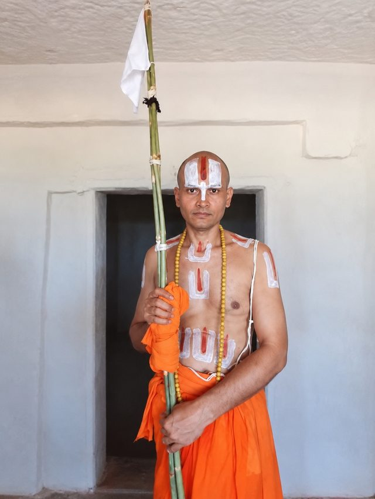
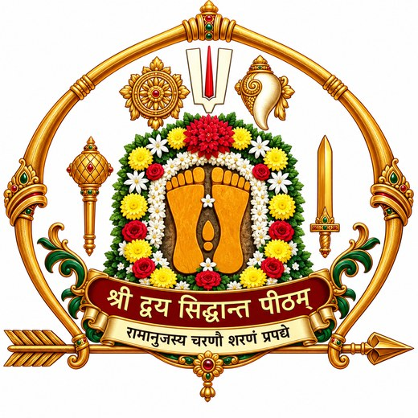
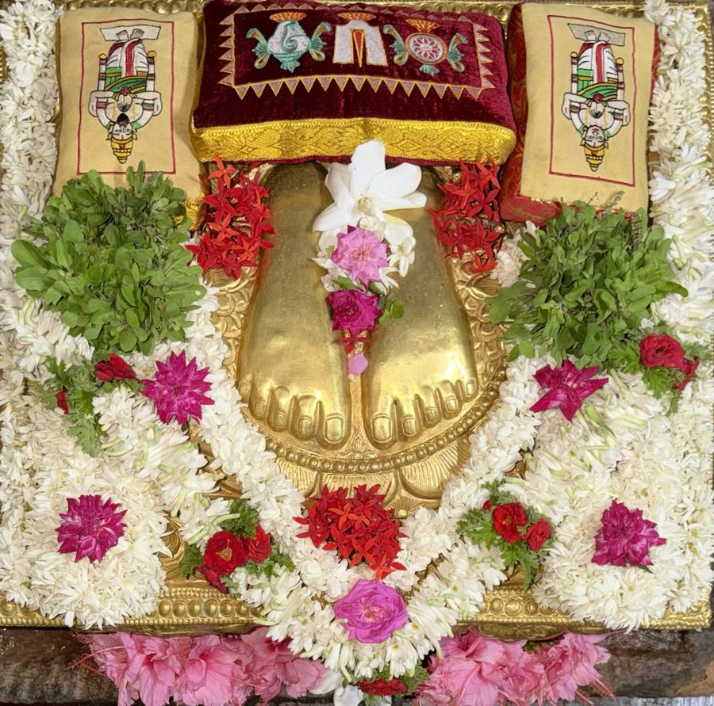
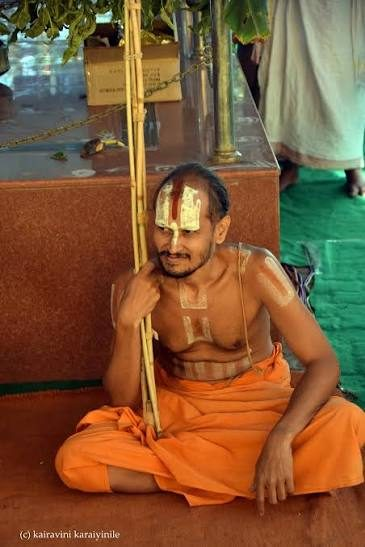
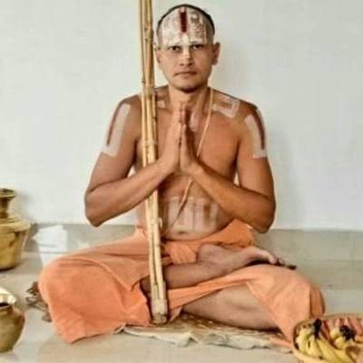
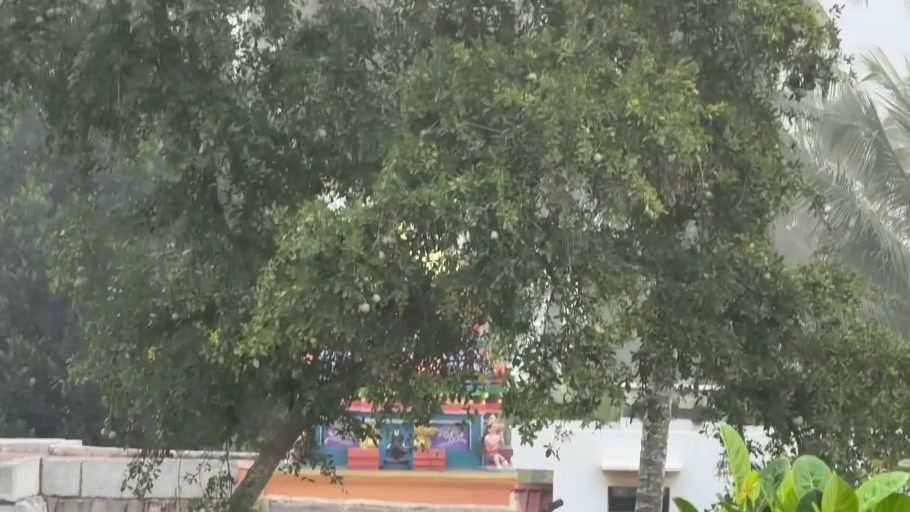

Jeeyar Swami Details


The life · The lineage · The mission
Sri Dhanurdaasa Ramanuja Jeeyar Swamiji
Founder and Peethadhipati of Sri Dvaya Siddhanta Peetham
Sri Salagrama · Mysuru District · Karnataka
From a distinguished international career to a life entirely dedicated to Acharya kainkaryam, scholarship, temple revival and service.
रामानुजस्य चरणौ शरणं प्रपद्ये
The sacred heart of the mission
At the Lotus Feet of the Acharya

At the heart of Swamiji’s life stands an unwavering dedication to the divine lotus feet of Bhagavad Sri Ramanujacharya. The ancient Sri Bhashyakara Swamy Devasthana at Salagrama, traditionally attributed to Sri Vaduganambi and believed to be approximately 850 years old, is revered for a singular distinction: its main sanctum enshrines only the Acharya’s Sripada, with no other deities in the main temple.
To Swamiji, the shrine is more than an institution to administer. It is a living expression of Acharya-nishtha: the conviction that the Acharya’s divine feet are the disciple’s refuge.
Shri Bhashyakaraswami Devasthana, Saligrama, Mysore
Saligrama, on the northern bank of the Kaveri in Mysuru district, is held sacred by Srivaishnavas as the place of avatara of Swami Vaduga Nambi. Here Vaduga Nambi installed the feet of Sri Ramanujacharya in the small shrine, establishing it as a charama parva nishtha kshetra, and facing it is the holy pond, the Sri Ramanuja Sripada Teertham.
Roots and formation
An Inheritance of Learning

Initiated into Sri Vaishnavam at the age of seven, Swamiji belongs to the revered disciplic tradition of Sri Koil Kandaadai Annan Thirumaligai, Srirangam. His formative years were shaped by the rigorous scriptural discipline and living devotional culture of the Sri Ramanuja Sampradaya.
He comes from the grand scholarly lineage of Mahavidvan Kirti Murti Sri U.Ve. Karappangadu Venkatacharyar Swamy, whose distinguished disciples include Melkote Satabhishekam Narasimhacharyar Swamy, Lakshmi Thathacharyar Swamy and Araiyar Sri Rama Sharma Swamy.
Swamiji’s father, Sri U.Ve. Venkatapathy Iyengar, was a Sri Bhashya Adhikari and retired as Deputy Controller in the Central Income Tax Department. From early childhood, Swamiji systematically studied the scriptures of the Sri Vaishnava Sampradaya under his father’s personal guidance. This sustained education grounded him in the traditional teachings, while his father’s example united scholarship with disciplined public service.
Scholarship meets systems thinking
Swamiji earned a Bachelor’s degree in Mathematics and a Master’s degree in Software Technology and Management. He then spent about eighteen years in the international IT industry, serving leading multinational corporations across several countries and specialising in Enterprise Architecture.
Alongside his professional career, he worked with major non-governmental organisations, reaching underserved and marginalised communities at the grassroots level across India. This direct engagement with people in need strengthened his enduring commitment to social service.
His professional training sharpened the analytical habits that continue to distinguish his engagement with ontology, epistemology and the logic of Visishtadvaita Vedanta.
A decisive turn
The Realisation of Surrender
2016 The year a realisation changed the course of his life
In 2016, a seemingly small but profound realisation transformed Swamiji’s life. He came to understand that it is the Supreme Lord who truly sustains and cares for everyone. Human beings, infinitesimal in their capacities, are often under the illusion that they themselves control and maintain the lives of their families. The ultimate protector had always been the Lord.
This conviction moved him to give up his professional and material life in search of divine knowledge. He left for the deep forests of Ahobilam and Badrinath. Although he eventually returned from the forests to inhabited places, he did not return to his former family life.
Living in complete surrender
Swamiji embraced a life of complete surrender, without employment or money, sustaining himself through temple service and the prasadam he received. This was not simply a change of occupation but a reorientation of life: from believing himself responsible for worldly affairs to placing his trust entirely in the Supreme.
He served in the kitchen of Lord Sri Ranganatha at Srirangam, helping revive traditional methods of preparing offerings, work later featured in The Hindu’s Friday Features. His kainkaryam then took him to sacred places including the lotus feet of Sri Nammazhvar at Azhvar Thirunagari and Sri Ananthazhwan at Kiranguru, near Pandavapura.
The path of renunciation
A Life Offered to the Acharya

On this sacred date, Swamiji embraced sannyasa at Melkote, giving up worldly life and dedicating himself fully to the service of Bhagavad Ramanujacharya. In his own spiritual understanding, he received sannyasa directly from Sri Ramanujacharya Swamy.
He then undertook about a year of sanchara, visiting Divya Desams and offering mangalasasanam at sacred shrines.
A permanent home in Salagrama
In June 2022, Swamiji moved to Salagrama and established Sri Dvaya Siddhanta Peetham. Since then, this sacred village has been his permanent residence, the seat of his teachings and the centre of his mission.
Revival and stewardship
Renewing a Sacred Heritage

At Salagrama, Swamiji took on the administration of Sri Bhashyakara Swamy Devasthana. Under his stewardship, renewed attention has been given to traditional observances, temple festivals and public awareness of the shrine’s extraordinary history. The change is visible in the growing participation of devotees: on major festival days, thousands gather at the temple.
To preserve the sanctity of the Sripada shrine, sustain its observances, and restore to present and future generations a living link with the heritage of Sri Ramanujacharya.
Teaching and philosophical inquiry
A Mind Trained to Question
Swamiji is an exponent of Sri Vaishnava ontology and epistemology, with a particular interest in fundamental questions of existence, perception, knowledge and the relationships among chit, achit and Ishvara as understood in Visishtadvaita.
His approach combines the discipline of traditional Vedantic inquiry with the clarity of mathematical reasoning and systems analysis. He insists on precise definitions, logical coherence and careful examination of assumptions. For him, philosophical teaching is not the repetition of inherited conclusions but a rigorous effort to understand their foundations.
A global classroom
Through online classes, he teaches students across the world, from Australia to the Americas, making Sri Vaishnava Siddhanta accessible across geography and generations.
Selected writings
- “The Second Is Already a Third”
- “The Colored Colorless”
These essays reflect his sustained engagement with logical and ontological problems, including the assumptions that underpin familiar concepts. His broader aim is to encourage a reasoned appreciation of the philosophical depth of the Sri Ramanuja Sampradaya.
Compassion in action
Scholarship in the Service of Life
Following the example of Sri Ramanujacharya, Swamiji regards the welfare of others as inseparable from spiritual responsibility. He extends educational, medical and essential life support to people in need around Salagrama, and supports temples, priests and Veda Pathasalas.
A distinctive feature of his work is his refusal to solicit donations from the general public. Neither the temple nor the Peetham keeps a public donation box (golaka); its activities are supported by contributions from his disciples.
The life and the resolve
Personally austere and approachable, Swamiji lives mainly on plain vegetables and fruits. Known for clarity of thought and firm determination, he has resolved to restore the lost glory of the Sri Ramanuja Sampradaya and, through its teachings and practice, contribute to the welfare of the world.
Spiritual guidance and contact
Sri Dvaya Siddhanta Peetham
Sri Dhanurdaasa Ramanuja Jeeyar Swamiji
Sri Dvaya Siddhanta Peetham · Sri Bhashyakara Swamy Devasthana
Salagrama, Mysuru District, Karnataka, India
रामानुजस्य चरणौ शरणं प्रपद्ये